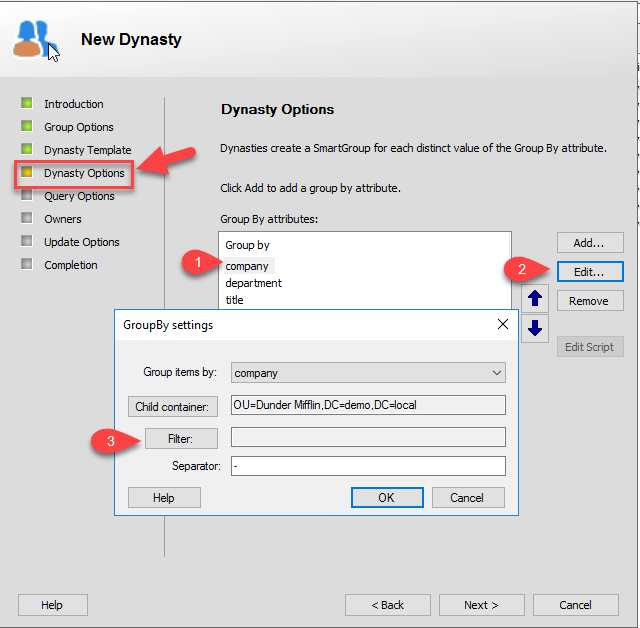
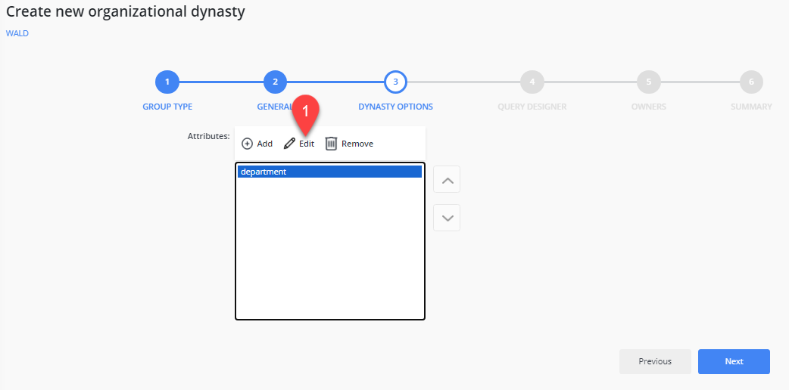
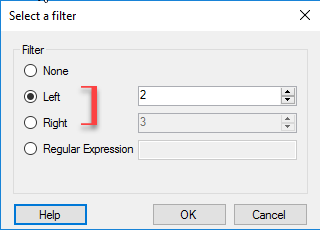
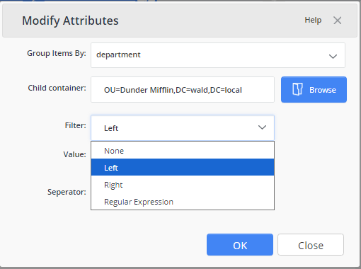
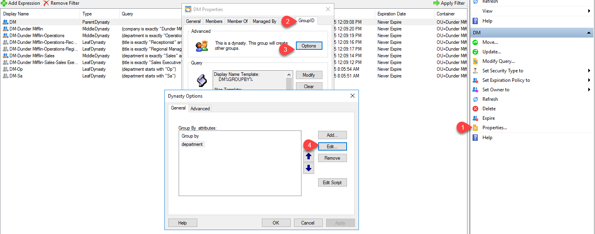
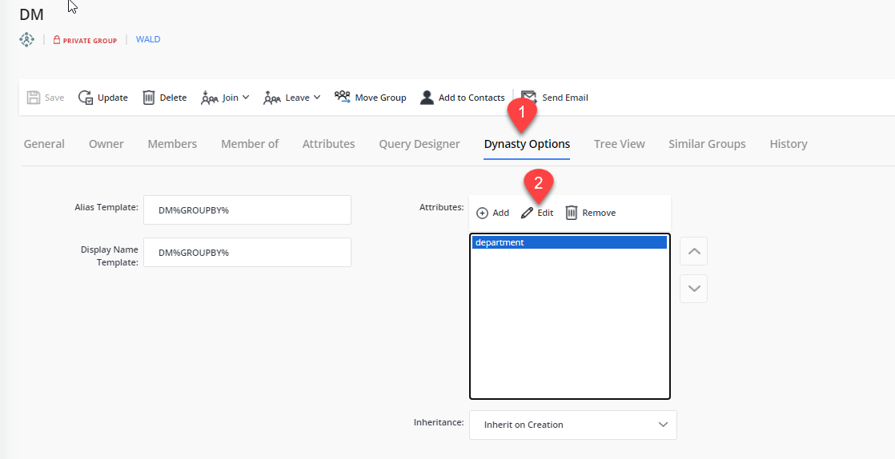
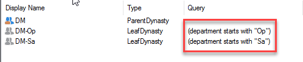

Applies To
Directory Manager 10 Automate and Directory Manager 11 Group Management
Overview
In some organizations, the Title field may include multiple abbreviations (such as A1, B2, or C1) or a full job title with tiers (such as Systems and Network Engineer). In these cases, using the default Is Exactly operator when creating Dynasties may not produce the desired group structure.
Instead, you can use the Starts with or Ends with operator to better match partial title values and group users accordingly.
Example: Using a Custom Attribute
If the Title and Tier are separated—such as placing the title in Custom Attribute 1—you can group by that attribute to simplify results.
Attribute value: Custom Attribute 1 = SOC Analyst
Sample group created: Everyone who is SOC Analyst
Example: Using the Full Title Field
If the Title field includes both the title and tier (e.g., SOC Analyst I, SOC Analyst II), Automate will create a group for each unique value.
Attribute values:
- Title = SOC Analyst I
- Title = SOC Analyst II
Sample groups created:
- Everyone who is SOC Analyst I
- Everyone who is SOC Analyst II
To avoid excessive group creation, use the Group-By filter to focus only on the desired portion of the value—for example, everyone who is SOC Analyst.
Instructions
You can update the default Dynasty grouping behavior when creating a new Dynasty or editing an existing parent Dynasty. Follow the steps below based on your scenario.
Creating a New Dynasty
- When creating a new Dynasty, continue through the wizard until you reach the Dynasty Options window.
-
Select the attribute you want to group by and click Edit. In the
GroupBy settings dialog, click Filter.

 -
To change the default operator, choose Left and enter the desired
number of characters if using Starts with. Choose
Right to switch to Ends with.

 - After saving your changes, the Dynasty will reflect the updated grouping behavior.
Editing an Existing Dynasty
- To configure an existing Dynasty using the same filter method, open the parent Dynasty’s properties.
- Navigate to the Directory Manager tab and click Options.
-
Follow steps 2 and 3 in the Creating a New Dynasty section above to
configure and apply the GroupBy filter.

 -
After saving your changes, the Dynasty will reflect the updated grouping behavior.
